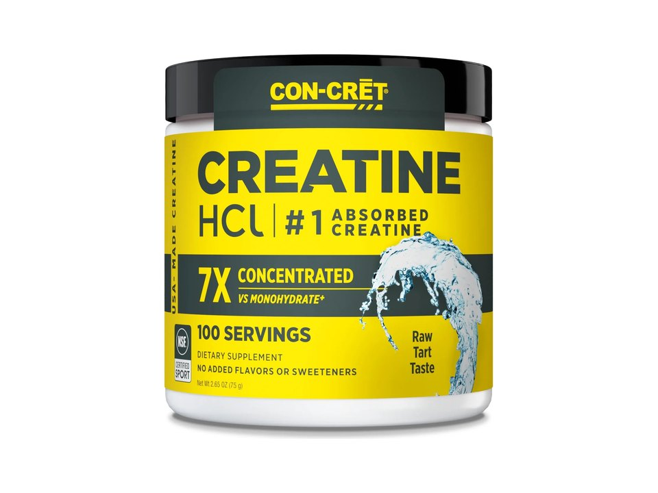

Product imagery supplied by the retailer. Packaging may vary — verify the Supplement Facts panel on the container you receive.
Con-Cret
Creatine HCl
Our analysis — editorial take, not from the label
The original 750 mg creatine HCl in 64 or 100-serving tubs, certified vegan, gluten-free, and kosher.
- Creatine
- 0.75 g
- Form
- HCl
- Servings
- 64
Price tier: Mid-range · relative cost per full serving across this database
We don't list dollar prices — they change daily and go stale. Check the live price instead:
View current price at Amazon Compare all creatine productsScoop Sense doesn't collect user reviews and won't invent them. Read customer reviews on Amazon
Affiliate links — Scoop Sense may earn a commission at no additional cost to you.
Unflavored powder plus flavors like Lemon Lime, Raspberry, and Pineapple; capsules are also available.
Label verified: July 2026 · View label source
Label data
Per full serving · 64 servings per container · from the manufacturer's panel
| Creatine per serving | 0.75 g |
|---|---|
| Form | HCl |
| Creatine HCl | 750 mg |
| Single-ingredient formula | 750 mg |
| Proprietary blend | No |
Primary label source: CON-CRET brand site product data · verified July 2026
Cautions
- Label suggests scaling servings to body weight — read directions before dosing
- Most long-term saturation research was done on monohydrate, not HCl
- Talk to your doctor if you have kidney conditions
Formulated for healthy adults — not intended for anyone under 18. Full health & safety notes
Product details
Where this label sits
Con-Cret Creatine HCl is one of the creatine products in the Scoop Sense database. Every active ingredient on the panel is listed with its own dose — nothing is hidden inside a blend total. It runs 64 servings per container at the full labeled serving. Everything on this page comes from the manufacturer's supplement facts panel as of July 2026 — never from the marketing page.
Key ingredients & studied doses
- Creatine HCl · 750 mg. The original concentrated creatine hydrochloride, studied for high solubility that allows sub-gram serving sizes.
- Single-ingredient formula · 750 mg. Creatine is studied for supporting muscle strength and power during repeated high-intensity efforts; this label lists no blends or added performance ingredients.
Flavors & sweetener
Unflavored powder plus flavors like Lemon Lime, Raspberry, and Pineapple; capsules are also available.
Who it's best for
People who prefer a smaller powder dose; note that HCl has a thinner research base than monohydrate. Derived from the label figures above — not medical advice.
How we log this label
Every entry is built the same way: we read the current supplement facts panel, log each disclosed dose, compare it against the amounts used in published research, flag proprietary blends, and state the cautions plainly. The full methodology explains each step.
This label against the research
How we evaluate labelsEach bar shows the amount commonly used in published human research, and where this label's dose falls against it. Research amounts are context, not a recommendation — they are not doses, and nothing here is medical advice.
-
Creatine HCl0.75 g
Creatine HCl has no established studied dose of its own. Brands serve it at a fraction of the monohydrate amount on a solubility argument that head-to-head research has not settled.
-
Creatine0.75 g
The 3–5 g studied range is monohydrate research. This label uses another form, which has no separately established studied dose — the amounts are not interchangeable.
Source: Kreider et al., Journal of the International Society of Sports Nutrition 2017 — “Once muscle creatine stores are fully saturated, creatine stores can generally be maintained by ingesting 3–5 g/day”
What other people say
Why we don't rate productsTwo different things, side by side: the rating the seller publishes on its own store, and what independent users write in public threads. Scoop Sense writes neither and collects no reviews of its own. Neither is evidence that a product works — they describe what people experienced and expected, not what the research shows.
On the seller's page
4.7 / 5
185 ratings
The brand's own storefront, read July 2026. A seller's rating is collected and moderated by the seller — treat it as a marketing figure, not an independent one.
What people actually report
Seen as effective by regular users, but the dominant conversation is skepticism about paying a premium for HCl when monohydrate performs comparably, compounded by unclear dosing guidance and occasional tolerability complaints.
- negative Value vs. monohydrate. The recurring argument is that HCl matches monohydrate's effectiveness at a much higher cost per dose, making the premium hard to justify.
- mixed Dosing clarity. New users find the smaller HCl serving size confusing next to the more familiar 5-gram monohydrate recommendation.
- negative Tolerability. A small number of users report a racing heartbeat after starting on the HCl formula.
Read the threads yourself
-
“Studies show that Creatine HCl is equally effective to monohydrate in performance but at a smaller dosage if taken daily (at a much higher cost).”
r/creatine, "Creatine HCl 'no loading' claim" -
“I bought a thing of "con-cret" creatine that I've heard good things about, but on the box it says to take 900 something mg at a time”
r/creatine, "Daily dosing?" -
“But i been getting rapid heart beats taking HCL.”
r/creatine, "Creatine HCL gave me a racing heart"
Common questions about Con-Cret Creatine HCl
Do I need a loading phase with Con-Cret Creatine HCl?
The loading question does not transfer to this form. Saturation timelines come from research on 3–5 g of creatine monohydrate daily; HCl has no established studied dose of its own, so there is no figure to load toward. Treat the label's 0.75 g as the brand's recommendation rather than a researched one.
Does Con-Cret Creatine HCl disclose every dose?
Yes — the label lists an individual amount for each ingredient, with no proprietary blends. That is what the "label fully disclosed" tag on Scoop Sense means, and it is what lets each dose be compared against the amounts used in published research.